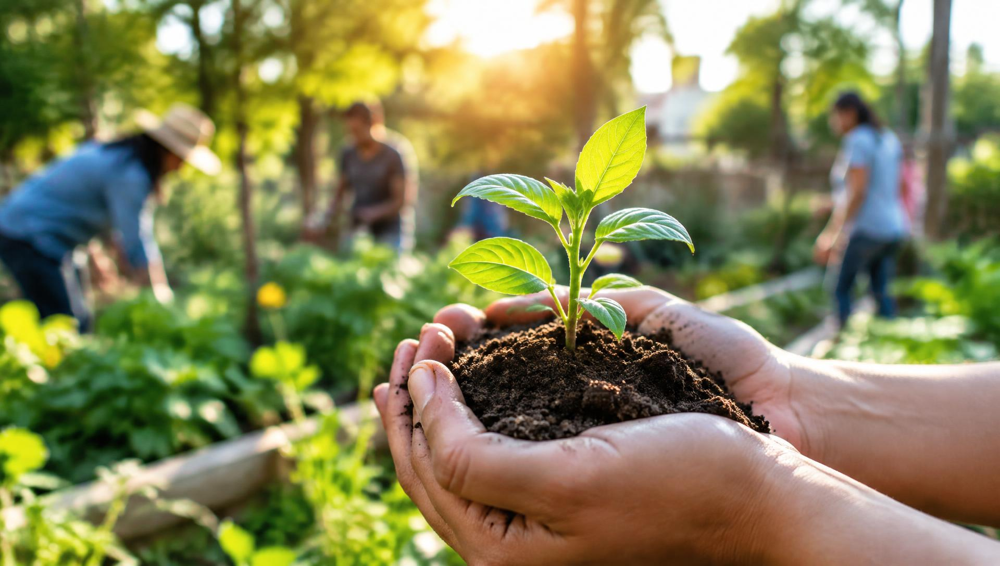

Preservação ambiental
Conteúdos sobre reaproveitamento de recursos, redução de desperdícios e cuidado com o meio ambiente.
Sustentabilidade e impacto social
O EcoImpacto reúne informações, exemplos de atitudes sustentáveis, iniciativas sociais e conteúdos educativos em um único espaço — acessível para todo mundo.

Conteúdos sobre reaproveitamento de recursos, redução de desperdícios e cuidado com o meio ambiente.
Dicas práticas para consumir melhor, desperdiçar menos e repensar hábitos do dia a dia.
Informação acessível para todas as pessoas, com recursos de leitura e navegação inclusivos.

Canteiros coletivos em bairros urbanos para produção de alimentos, educação ambiental e convivência comunitária.

Pontos de coleta seletiva com orientação sobre separação de resíduos e reaproveitamento de materiais.

Plantio de mudas nativas em áreas degradadas, com mutirões de voluntariado e acompanhamento do crescimento.
Os números abaixo são exemplos fictícios, usados apenas para demonstrar como os resultados seriam apresentados. Não representam dados reais.